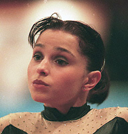

Ludivine Furnon (FRA)
1995 World FX Bronze Medalist
2000 European FX Champion

Medal Total
World Championships: 1
Bronze
European Championships: 1 Gold
Ludivine was born on October 3, 1980, in Nimes. She began gymnastics at the "old" age of 11 but made rapid progress. Three years after starting in the sport, she not only represented France at the world championships but she became the first French female gymnast to win a world medal. She currently performs with Cirque de Soleil.
Competition Results
1995
French International: 14th AA
Massilia Cup: 3rd FX
World Championships: 6th Team, 3rd FX
1996
European Championships: 9th AA
French International: 3rd B
Massilia Cup: 9th AA
Olympic Games: 8th Team, 19th AA
World Championships: 7th FX
1997
DTB Cup: 5th FX, 7th B
FRA Championships: 2nd AA
Mediterranean Games: 1st Team, 1st AA, 1st FX 5th B
Swiss Cup: 1st FX, 2nd B
World Championships: 5th Team, 22nd AA, 4th B
1998
European Championships: 5th FX
FRA Championships: 1st AA
French International: 3rd FX, 4th B
Sagit Cup: 1st FX, 3rd B
World Cup: 5th B, 7th FX
1999
American Cup: 19th AA (prelims)
ESP-FRA Dual Meet: 4th AA
FRA Championships: 1st AA
French International: 3rd AA, 3rd B, 4th FX
Pre-Olympic Test Event: 9th AA
3-on-3 International: 8th Team
World Championships: 6th FX
2000
European Championships: 1st FX
FRA-GBR-CAN-GER: 10th AA
Olympic Games: 8th Team
Zenith Tournament: 3rd B
2002
FRA Championships: 6th AA
2003
Massilia Cup: 16th AA, 13th B
This page was created on January
3, 2004.
© Gymn Forum